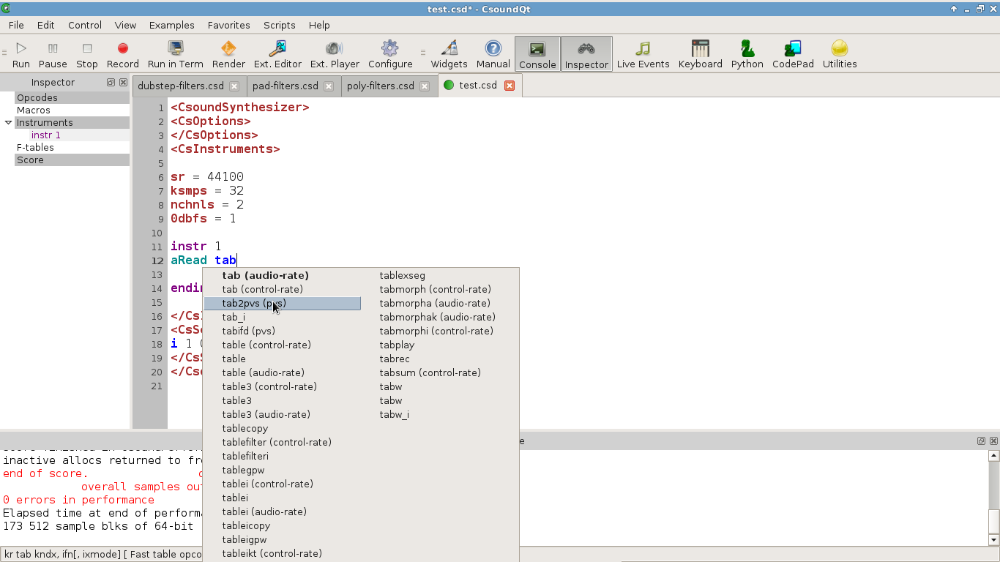
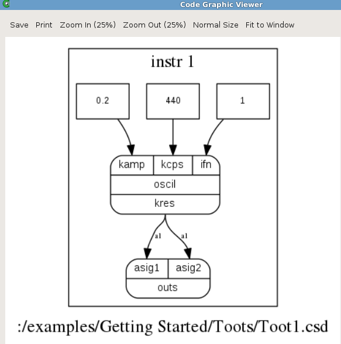
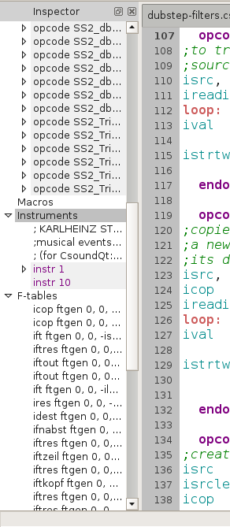
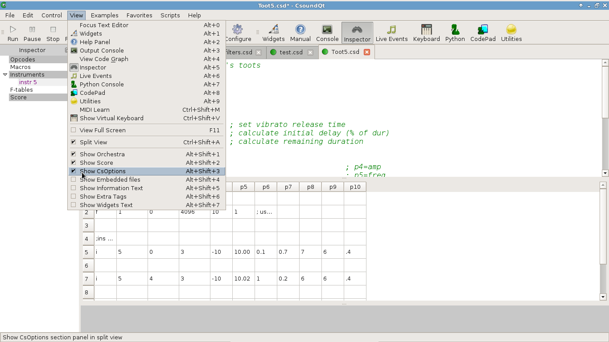

Editor
You can find a short description of all Menu Items in the Menu section of this documentation. This page focusses on some features of the CsoundQt Editor.
Code completion¶
When you type, for instance, the letters "tab", you will see different options for code completion:

Choose one of them with the mouse or the arrow key. You have two choices now:
— tab will only complete the opcode name;
— return will also insert the arguments with the names found in the manual.
Any of your own variable names will offer self-completion, too.
Access to the Csound Manual¶
When you select any opcode (double-click on it), or have the cursor in it, you can get the corresponding page of the Canonical Csound Manual by selecting Help > Shop Opcode Entry (or Shift+F1).
You can also find a short info about the opcode at the bottom of the Editor's panel.
Code Graph¶
Select Examples > Getting Started > Toots > Toot 1, and then View > View Code Graph. You should see this drawing:

It is not perfect, but quite useful to show the signal flow for simple csd files. If it is not working, try to set the graphviz dot application in Configure > External Programs > Dot.
Inspector¶
When you click on the Inspector button (or View > Inspector), you get a panel which is quite useful for extended Csound code:

You can navigate easily to any part of the code, or in the score.
Split View¶
Instead of the usual raw-text mode, CsoundQt offers a split view for both, the orchestra and the score. Go to View > Split View, and you will see the score changed to a spread-sheet-like view, and the tags (CsOptions etc) disappeared. You can choose which sections to show or to hide:

Recompile / Evaluate Python Code¶
Since Csound 6, it is possible to change any instrument definition while Csound is running. CsoundQt provides an easy way of recompiling. This be your Csound code:
instr 1
schedkwhen metro(1), 0, 0, 2, 0, 1
endin
instr 2
prints "Hallo\n"
endin
schedule(1,0,1000)
Run this code and change the print statement in instrument 2 from "Hallo\n" to "HalloHallo\n" or whatever. Nothing will happen, as Csound needs a command to recompile instrument 2. Now place the cursor anywhere in instrument 2, go to the Edit menu, and select Evaluate Section. You will see a message in the console: "Csound code evaluated.", and after this message you will see the new printout.